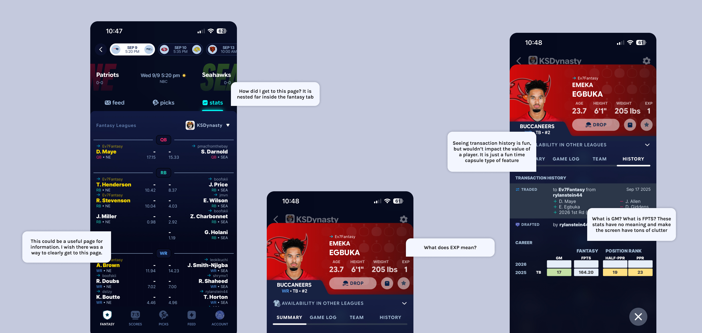
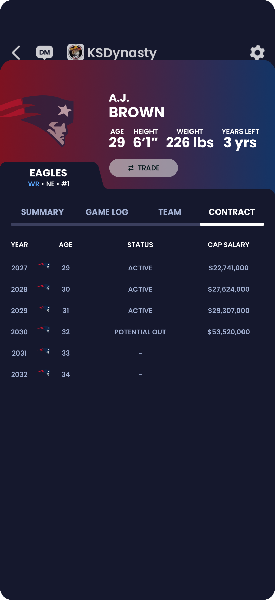
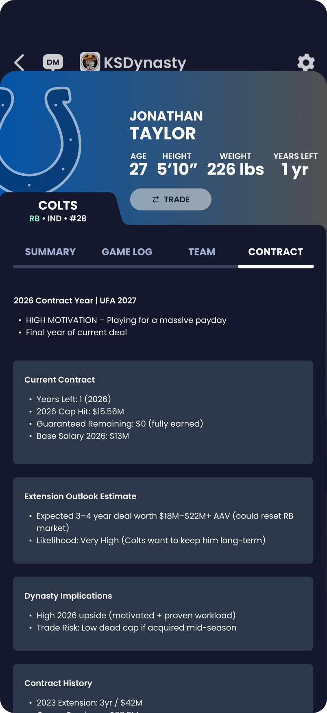
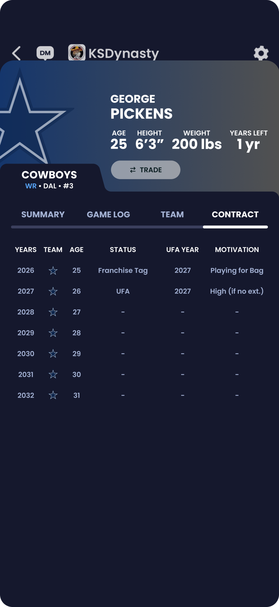
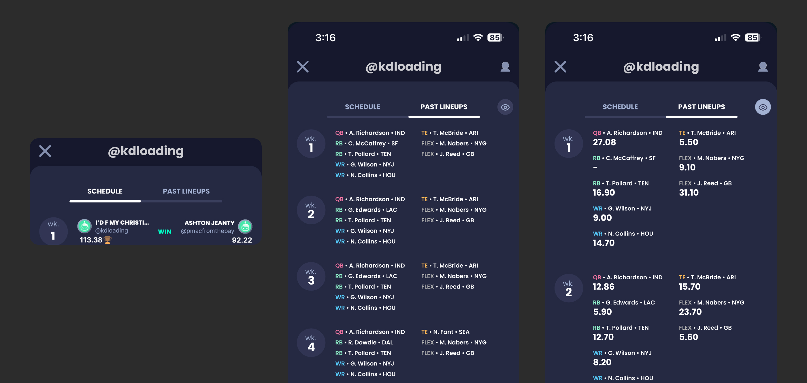
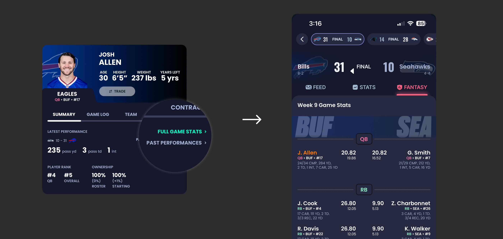
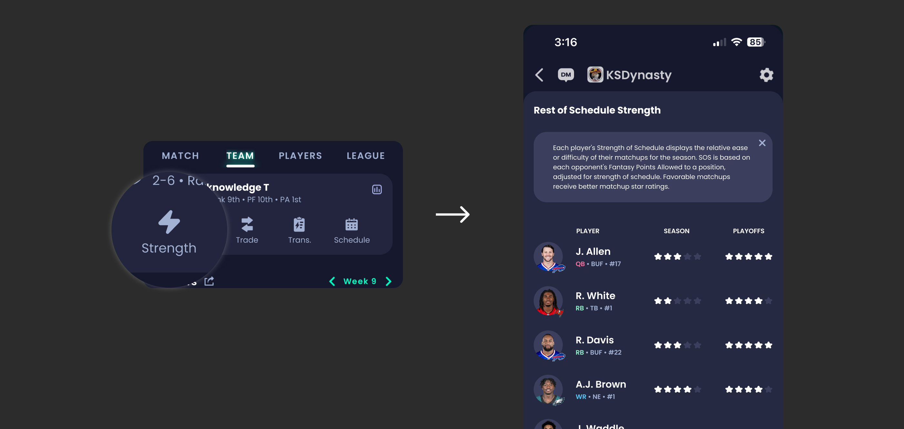
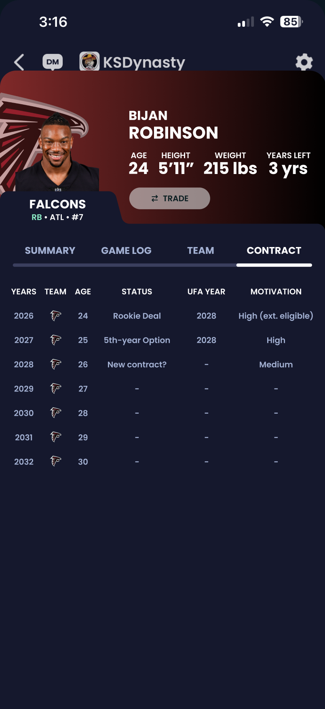
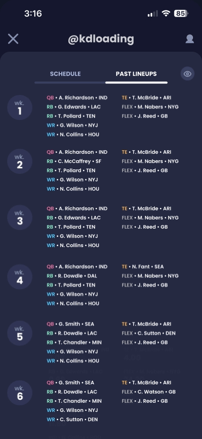
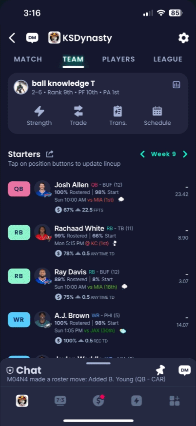

Helping fantasy football managers make faster, more confident trade decisions
CONTEXT
It’s early Thursday afternoon. Kenneth opens the app Sleeper and pulls up the trade block, desperate to find a running back before his roster locks. He knows what he wants: a player in a contract year, hungry to perform, who will win him the championship. But when he tries to learn more about his options, the app gives him nothing. No way to check contract details. Just a name and stats that do not tell the whole story. He searches. He clicks around. He does not find much. So he closes the app, adds some waiver wire picks, and walks away from sending out possible trade offers.
Kenneth is not alone. Across thousands of dynasty leagues every week, competitive managers are making their most important roster decisions half-blind. Not because the information does not exist, but because Sleeper was not built to surface it at the moment it matters most.
THE PROBLEM
Dynasty managers are constantly in high-stakes situations. Every draft, every trade, every player in your lineup carries real consequences for their season. But in Sleeper's Dynasty Mode, those consequences are permanent and long-standing. You are building a roster for years, not just one season. So when users were leaving the app mid-flow, abandoning trades, and walking away without finishing what they started, something fundamental was broken.
Three questions drove this entire project:
Three design principles was considered in every decision I made:
Extend the experience, never interrupt it. Every screen, feature, and interaction had to feel like it was always part of Sleeper. If a new addition felt jarring or out of place, it was not ready.
Every addition has to earn its place. Expert dynasty managers use third-party sites. The bar for including something in the app was not "would this be useful" but "is the feature important for all users?"
Design for the competitive manager without losing the casual one. The expert researching user and the casual Thursday, Sunday, Monday player both live in the same app. The solution had to serve both without overwhelming either.
RESEARCH
I started the project with one question in mind: why are dynasty managers leaving their workflows mid-decision?
To find out, I interviewed 30 dynasty league users, ranging from casual weekend players to obsessive, spreadsheet-driven managers who breathe fantasy football. I also ran a competitive analysis of ESPN and Yahoo to understand what the competitive landscape was already giving users that Sleeper wasn't.

I expected to hear a wishlist of missing features. What I actually heard was something more specific and more damaging: users didn't trust their own decisions inside the app. They were hesitating on trades, second-guessing themselves, and leaving mid-flow to find answers somewhere else.
Three patterns showed up consistently across every interview:
Contract details are nonexistent
Contract details were not accessible at any page in the Sleeper app
Confusing Information Architecture
Navigation and trying to find the page for your specific needs was unpredictable
Players stopped their workflows during the experience
Users abandoned trades when uncertainty exceeded their confidence
One participant said it better than any data point could:
"I want to see how many years are left on a player's contract without digging through the app or third-party sites. I would like to know if a running back is playing in a contract year. That would make him more valuable in my eyes, and would lead to me sending out trade offers for him."
— Fantasy football user, 10-team league, 2 years experience
This quote reframed everything. The problem was never missing features. The problem was that users couldn't make confident decisions inside a product they were already using and enjoying. Every design decision I made from this point forward was filtered through one question: does this reduce decision uncertainty, or does it just add noise?
That shift, from "what is missing" to "where does confidence break," became the foundation of everything that followed.
INSIGHT 1
After gathering all of the insights I heard across 30 interviews, one conclusion became impossible to ignore. The problem was that the app was generating confusion for the users and did not generate confidence.
Missing contract details forced users out of the app. Unpredictable navigation made returning feel pointless. Uncertainty compounded until users simply quit.

This told me something critical about the design direction. Adding an entirely new contracts page to an already cluttered, confusing experience would not solve anything. It would just give users one more thing to get lost in. Before I could design anything tangible, I needed to understand what was already failing inside the app.
So I went straight to the source. I contacted my design connections at Sleeper for a follow up critique session, and in that conversation I asked which parts of the app get the least amount of traction. What I learned changed everything.
The history tab, one of the existing tabs on every player profile page, was the least engaged section in the entire player view. The only meaningful information it contained was a log of the player asset changing managers within a league. Useful occasionally, but not vital enough to drive confident decision making or increase trading activity.
That was the insightful nugget I needed. Instead of adding a contracts tab on top of an already crowded interface, I replaced the history tab entirely. The new tab would surface contract years remaining and guaranteed money still on the deal, giving dynasty managers exactly what they needed to evaluate real world trade value without ever leaving the app.
This became the principle I applied across every decision that followed. Every addition had to replace something, improve something, or reduce the number of steps between a user and their decision. Nothing got added just because it was useful. It had to earn its place by making something else better or by removing something that was not pulling its weight.
INSIGHT 2
I needed to understand how users were actually using the app. I mapped Sleeper's full information architecture, tracing every path, every tap, and every destination users could land on. What I found was more alarming than I expected.
Buried deep inside the app was a section called Sleeper Zone. It had its own visual language, its own layout, and its own feel. It was so disconnected from the rest of the Sleeper app’s experience that when I stumbled across it during my IA audit, I genuinely did not know how I had gotten there or how to get back out. It did not feel like Sleeper. It felt like a different app entirely.
If a designer mapping the app could get lost and disoriented, a user in the middle of a high stakes trade decision would be even more lost. Every unexpected screen was another moment where user confidence lowered.
This reframed my second insight: users did not need more features. They needed to trust that the app would take them where they expected to go.
That clarity shaped my hypothesis for where contract information should live. Player specific information belongs on the player profile page. That is where users would instinctively look first because that is where their mental model already told them it should be. I did not need to invent a new section of the app. I needed to meet users where they already were.
To validate my hypothesis, I ran usability testing. 90 percent of participants found the new contract tab without any guidance from me. When I asked them to narrate their thinking out loud, the reason became clear immediately. They knew that anything unique to a player had to live on that player's profile page. The mental model was already there. I just had to design to meet it.
I then rebuilt the information architecture diagram with new channels that route users into practical, predictable workflows, eliminating the dead ends and disconnected screens that were breaking confidence at every turn.

DECISION 1
Player specific information belongs on the player profile page, and my usability testing had already validated that hypothesis with a 90 percent findability rate. But knowing where to put the contract information was only half the decision. The harder question was how to display it.
I had three directions I was weighing. (please hover the images below!)



Alongside the usability feedback on UI format, I also researched which components of a real NFL contract actually matter for fantasy football specifically. The answer was simpler than I expected. Beyond the basics of years, team, and age, what truly drove trade decisions was contract status, UFA year, and motivation level. Everything else, void years, cap space, signing bonuses, incentive clauses, was real life front office detail with no impact on fantasy value. With only six fields that actually mattered, the table could stay clean instead of growing into something cluttered and intimidating.
With only six fields that actually mattered, the display could stay clean instead of growing into something cluttered and intimidating.
The final contract tab showed years, team, age, status, UFA year, and motivation in a clean table format that felt native to Sleeper and gave dynasty managers exactly what they needed to evaluate a player's real world trade value in seconds.
DECISION 2
A finished wireframe or mockup can look complete and still fall apart the moment someone has to build it. Before considering two of my features done, I mapped out the full user journey for both: viewing player contract details and viewing previous weeks of an opponent's lineup. I mapped every tap, screen, and possible outcome. These flows needed to be instantly readable by someone who had never seen the designs before. A flow that only made sense to me would not be helpful.
Along the way, I made sure to account for scenarios a single static mockup would never reveal. A player whose contract had expired without a new deal, for example, would show as a free agent with blank fields and dash marks rather than broken or misleading data.
Once the flows were built, I went back to my Sleeper design contacts and walked them through both flows step by step. Their thoughts confirmed that the diagrams held up and that the features felt realistic within Sleeper's existing systems. That conversation gave me confidence that the designs were not just usable, they were buildable.
.avif)
.avif)
DECISION 3
Dynasty managers who wanted deeper stats could already find them. ESPN, Yahoo, and a handful of third party tools existed for exactly that purpose. So the real question was not whether to add more data. It was whether Sleeper should be the place that data lived, and if so, how to do it without alienating the casual manager who just wanted to check their lineup on a Sunday.
The answer came down to one principle: give users control over how much they see, rather than deciding for them.
Opponent lineup history
When viewing an opponent's past lineups, users could see exactly which players were started in previous weeks and how many points they scored. But not every manager wants that level of detail every time. I added a simple eye icon toggle that let users hide points scored entirely, condensing the view and making it easier to scan player names and positions without the added noise. This was not about removing information, it was about letting users decide how much of it they needed in the moment. In testing, 90 percent of participants said hiding the metrics made the experience feel cleaner without losing anything essential.

Full game stats
This feature did not exist in Sleeper at all before this project. While researching how users engaged with game data, I found something telling: Sleeper's existing stats pages were difficult to reach, and once a week passed, users had effectively no reason to ever revisit them. The data became invisible the moment it became historical.
I split this into two distinct workflows instead of one confusing one. Full Game Stats covers the current or upcoming game, built for managers making real time decisions. Past Performances covers everything before that, giving managers a way to look back across a player's full season history. Two buttons, two clear intentions, no guessing which one to tap.

Strength of Schedule
The original schedule button told a similar story to the stats pages: it existed, but barely anyone used it. Across testing, it was tapped in only 12 of 103 test runs. Rather than removing it, I replaced it with a star rating system that let users instantly gauge how favorable a player's upcoming matchups looked, without having to interpret raw data themselves. Five stars meant a strong stretch ahead. One star meant a difficult one. The feature also moved to a location in the navigation that testing confirmed users could find quickly and intuitively.

FINAL DESIGN DIRECTION

Contract tab
A dedicated home for contract status, years remaining, and trade motivation, right where dynasty managers already look.

Opponent lineup history
Past lineups at a glance, with a simple toggle to hide point totals when you just need the bigger picture.

Strength of schedule
A five-star system that turns a buried, rarely used button into an instant read on a player's upcoming matchups.
RESULTS
26 of 30 dynasty managers said they could make trade decisions faster and with more confidence using features from the redesigned experience. Navigation also became dramatically simpler and what used to take users 6 screens of guessing and backtracking dropped to 2 to 3 direct steps. Users knew where they were going.
One participant put it simply:
"I had a feeling the contract info for a player would be on the player profile screen. I also like how the table of data is easy to read. Also it's fun that the language used in the motivation tab is fun and personable."
That comment captured everything the project was built around. Users trusted their instincts about where to look and found what they needed without friction, even noticing the small personality choices along the way.
Kenneth's Thursday night doesn't end the same way anymore. He opens Sleeper, taps into the player he's eyeing, and the contract tab is exactly where he expected it to be. Years remaining. Status. Motivation, worded plainly enough to tell him this player is playing for a new deal. He sends the trade offer. No searching. No tapping around. No walking away.
REFLECTION
If I started this project again, I'd want more time embedded directly inside Sleeper's actual design system, building within their real components and styles instead of recreating everything from scratch. Since this was a self-directed, volunteer project, I only had two rounds of calls with my contacts at Sleeper, so every question, critique, and piece of feedback had to be efficient and high-value. More time there would have meant more confidence in how closely my designs matched their real production constraints.
Going in, I assumed the fix was mostly additive: build the missing features, replace the ones that weren't working. What I didn't fully appreciate until deeper into research was how much user trust had already eroded, not just from missing data, but from a broader pattern of confusing updates and the gambling integrations rolled out across the platform. That context didn't change what I designed, but it changed how I thought about the stakes. Users weren't just missing information. They were already primed to distrust the app before they even opened a player's profile.
This project taught me that making a product "better" on paper doesn't matter if users feel lost or disrupted in practice. A well-reasoned feature is worthless if it breaks the trust someone already has in how an app works. Going forward, I want to stay close to that lesson: keep listening to the people actually using what I build, and make sure every change earns its place by genuinely benefiting users across the full range of how they use a product, not just the ones who think like I do.
NEXT STEPS
- Validating with a larger and more diverse user group
- Introducing visual hierarchy signals for contract states
- Collaborating with engineering to integrate live data constraints
The first direction used a traditional table format pulling in real NFL contract data including cap salary numbers and financial terminology.
Every single participant rejected it. The language was confusing and the numbers meant nothing in a fantasy context.